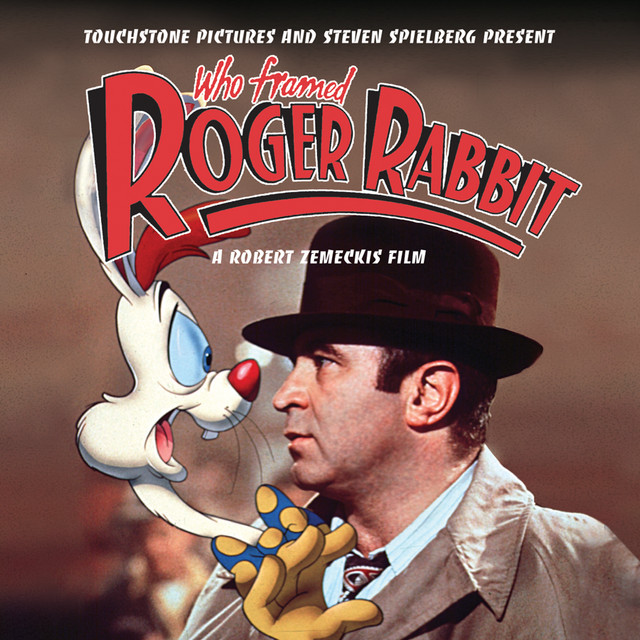

To live in Barbie Land is to be a perfect being in a perfect place. Unless you have a full-on existential crisis. Or you're a Ken.
To live in Barbie Land is to be a perfect being in a perfect place. Unless you have a full-on existential crisis. Or you're a Ken.

The story of a team of female African-American mathematicians who served a vital role in NASA during the early years of the U.S. space program.

When Captain James Hook kidnaps his children, an adult Peter Pan must return to Neverland and reclaim his youthful spirit in order to challenge his old enemy.

While navigating their careers in Los Angeles, a pianist and an actress fall in love while attempting to reconcile their aspirations for the future.

Stuck in a time loop, two wedding guests develop a budding romance while living the same day over and over again.

A toon-hating detective is a cartoon rabbit's only hope to prove his innocence when he is accused of murder.